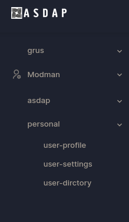
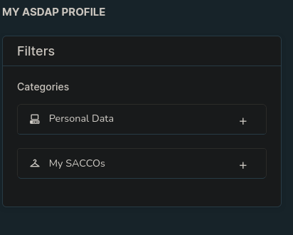
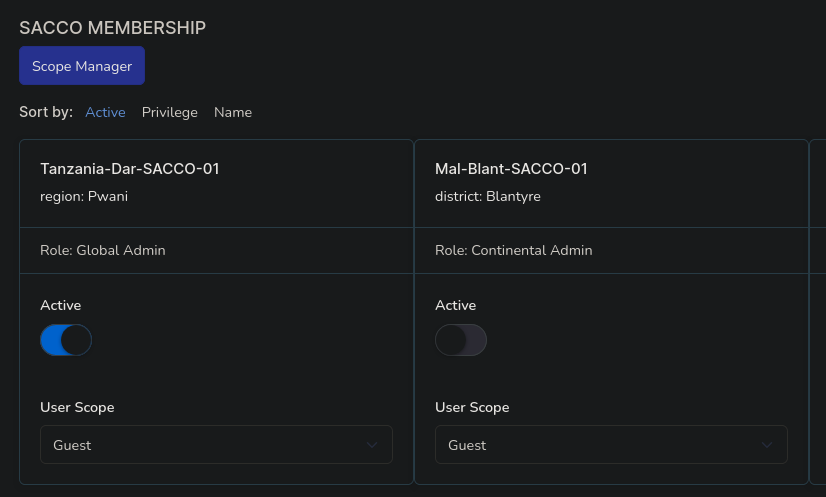
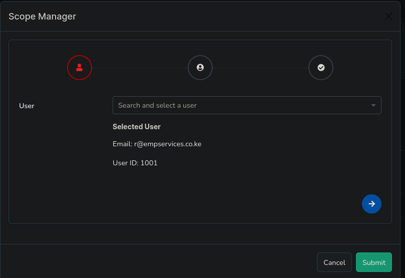
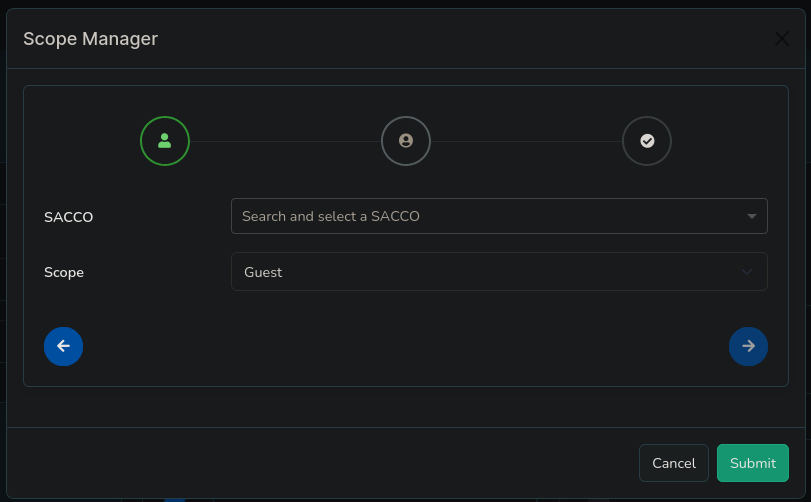

User Profile
User Profile
The User Profile section in Corpdesk allows users to view their data and, depending on their role, manage additional settings related to SACCO memberships. Administrators can perform extended actions like managing scopes and activating sessions for other users.
User Profile Overview
The Corpdesk User Profile is accessible from the menu at: ‘personal/user-profile’. It provides an extensible framework to handle user-related data, with special extensions for ASDAP modules.
Key Sections of the User Profile
1. User Data Panel
This panel displays user-specific details, including SACCO membership data.
2. SACCO Membership Panels
These panels display the SACCOs the user belongs to and include controls for managing user scope and session activation.
-
Scope Manager Button: Launches a wizard to set user scope.
- Select User: 
- Select SACCO & Scope: 
- Finish: Completes the process.
- SACCO Session Activation Switch: Allows users to activate a SACCO session. Only one SACCO can be active at a time, even if the user has administrative privileges over multiple SACCOs.
- User Scope Dropdown: Administrators can assign scopes to users via this dropdown.
- User Role Information: Displays the user’s role in the SACCO. This field is read-only and reflects the assigned role.
Note for Regular Users: The only control available to regular users is the SACCO activation switch. This sets the user’s active context for the session.
Administrator Privileges: Other advanced controls, such as managing user scopes and roles, are only visible to administrators.